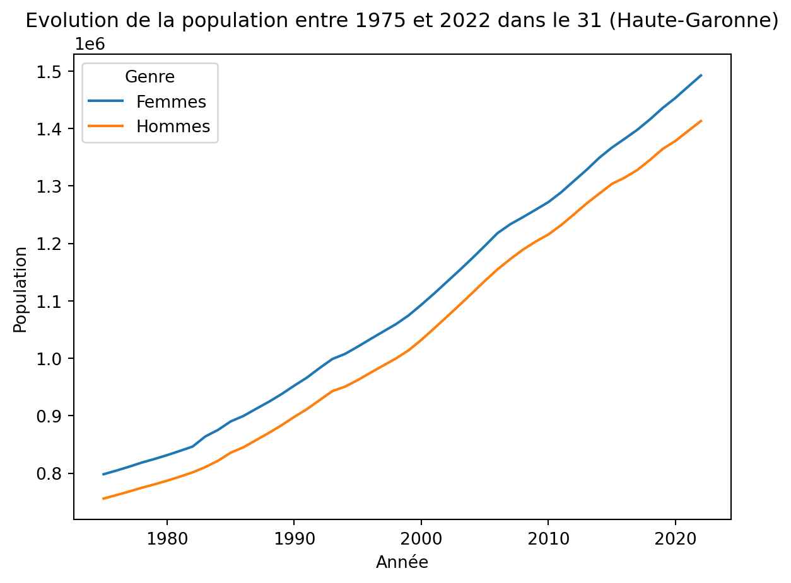
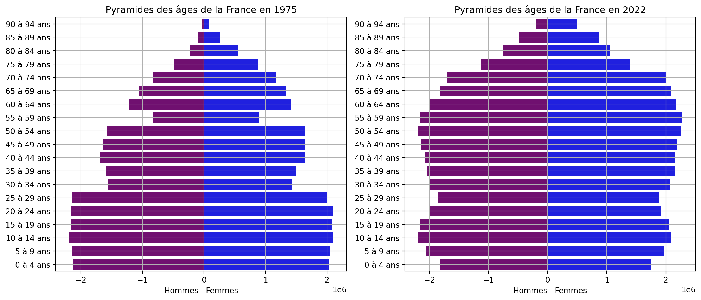
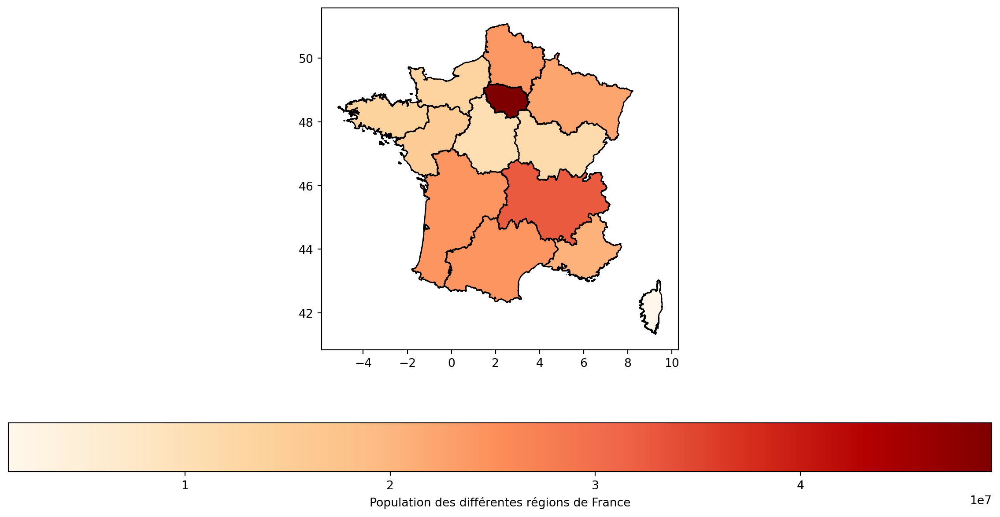
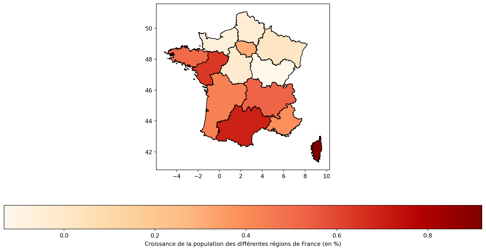

import copy
import pandas as pd
import matplotlib.pyplot as plt
import geopandas as gpd
import seaborn as sns
import solutionsProjet 3 - Analyse du recensement de la population
title: “Project 3 - Population census analysis”
The goal of this project is to perform a quick statistical analysis of a dataset whose format is not directly optimized for analysis in python. We will exclusively use the pandas library for data analysis. To best reproduce a situation you might encounter, we strongly encourage you to consult the library’s documentation (docs).
We will focus on the population estimate as of January 1st of each year, this estimate being made from censuses and population evolution models. The data is accessible on the Insee website at the following address: https://www.insee.fr/en/statistics/1893198. The file we will use can be downloaded directly via this url: https://www.insee.fr/fr/statistiques/fichier/1893198/estim-pop-dep-sexe-aq-1975-2023.xls.
Part 1: Downloading and formatting data
Before downloading the data with python, it is necessary to know the format of our data. In our case, it is the Excel format (.xlsx). Additionally, it can be useful to look at what the data we want to import looks like, especially when its format is not standard. So, before starting, take the time to glance at the data.
Question 0
Download the data by clicking on this link and open it with your favorite spreadsheet software. Analyze the data structure.
Question 1
Define the load_data() function which has no parameters and returns a Dict where the keys correspond to the names of the tabs of our file and the values correspond to the data of the different spreadsheets. To do this, use a function from the pandas library by specifying the correct parameters.
Expected result
data = solutions.load_data()
data["2022"]| Départements | Ensemble | ... | Femmes | ||||||||||||||||||
|---|---|---|---|---|---|---|---|---|---|---|---|---|---|---|---|---|---|---|---|---|---|
| Unnamed: 0_level_1 | Unnamed: 1_level_1 | 0 à 4 ans | 5 à 9 ans | 10 à 14 ans | 15 à 19 ans | 20 à 24 ans | 25 à 29 ans | 30 à 34 ans | 35 à 39 ans | ... | 55 à 59 ans | 60 à 64 ans | 65 à 69 ans | 70 à 74 ans | 75 à 79 ans | 80 à 84 ans | 85 à 89 ans | 90 à 94 ans | 95 ans et plus | Total | |
| 0 | 01 | Ain | 37584.0 | 44592.0 | 46872.0 | 41596.0 | 32455.0 | 32252.0 | 40494.0 | 44180.0 | ... | 22455.0 | 20459.0 | 18543.0 | 17382.0 | 12387.0 | 8494.0 | 6821.0 | 3955.0 | 1583.0 | 337889.0 |
| 1 | 02 | Aisne | 26469.0 | 32510.0 | 35567.0 | 32782.0 | 28024.0 | 25419.0 | 29274.0 | 31434.0 | ... | 17976.0 | 17975.0 | 17252.0 | 16532.0 | 10599.0 | 8058.0 | 6997.0 | 3923.0 | 1290.0 | 268287.0 |
| 2 | 03 | Allier | 13508.0 | 16754.0 | 18159.0 | 18286.0 | 16279.0 | 14083.0 | 15296.0 | 16672.0 | ... | 11825.0 | 12482.0 | 13125.0 | 13189.0 | 9667.0 | 7466.0 | 6559.0 | 3800.0 | 1410.0 | 173172.0 |
| 3 | 04 | Alpes-de-Haute-Provence | 7211.0 | 8751.0 | 9467.0 | 8656.0 | 6977.0 | 6822.0 | 8163.0 | 9022.0 | ... | 6528.0 | 6420.0 | 6160.0 | 6044.0 | 4680.0 | 3413.0 | 2748.0 | 1478.0 | 587.0 | 85859.0 |
| 4 | 05 | Hautes-Alpes | 6041.0 | 7183.0 | 7943.0 | 7522.0 | 5521.0 | 5804.0 | 7219.0 | 7987.0 | ... | 5252.0 | 5463.0 | 5291.0 | 5116.0 | 3683.0 | 2836.0 | 2189.0 | 1207.0 | 375.0 | 71697.0 |
| ... | ... | ... | ... | ... | ... | ... | ... | ... | ... | ... | ... | ... | ... | ... | ... | ... | ... | ... | ... | ... | ... |
| 101 | 976 | Mayotte | 47016.0 | 43895.0 | 39982.0 | 29873.0 | 19284.0 | 19923.0 | 20467.0 | 19851.0 | ... | 3405.0 | 2308.0 | 1570.0 | 981.0 | 701.0 | 375.0 | 216.0 | 64.0 | 65.0 | 156507.0 |
| 102 | DOM | NaN | 172294.0 | 176252.0 | 182101.0 | 169777.0 | 127009.0 | 116519.0 | 129841.0 | 131092.0 | ... | 77860.0 | 64319.0 | 55570.0 | 42452.0 | 30534.0 | 22192.0 | 14489.0 | 7007.0 | 3126.0 | 1163453.0 |
| 103 | France métropolitaine et DOM | NaN | 3573900.0 | 4025667.0 | 4271387.0 | 4208524.0 | 3922318.0 | 3725962.0 | 4064176.0 | 4200292.0 | ... | 2279864.0 | 2177958.0 | 2077890.0 | 1997938.0 | 1398856.0 | 1054963.0 | 870391.0 | 491588.0 | 182900.0 | 35020367.0 |
| 104 | NaN | NaN | NaN | NaN | NaN | NaN | NaN | NaN | NaN | NaN | ... | NaN | NaN | NaN | NaN | NaN | NaN | NaN | NaN | NaN | NaN |
| 105 | Source : Insee - Estimations de population (ré... | NaN | NaN | NaN | NaN | NaN | NaN | NaN | NaN | NaN | ... | NaN | NaN | NaN | NaN | NaN | NaN | NaN | NaN | NaN | NaN |
106 rows × 65 columns
Your turn!
def load_data():
# Your code here
return dataQuestion 2
Now that the data is imported, we will format it into a single DataFrame with the columns:
gender;age;population;dep_code;dep;year.
2.1 - To do this, create a function reshape_data_by_year(df, year) which takes as argument a DataFrame from your Dict data and a given year.
Expected result
year = 2022
df = solutions.reshape_table_by_year(data[f"{year}"], year)
df| genre | age | population | dep_code | dep | annee | |
|---|---|---|---|---|---|---|
| 0 | Ensemble | 0 à 4 ans | 37584 | 01 | Ain | 2022 |
| 1 | Hommes | 0 à 4 ans | 19489 | 01 | Ain | 2022 |
| 2 | Femmes | 0 à 4 ans | 18095 | 01 | Ain | 2022 |
| 3 | Ensemble | 0 à 4 ans | 26469 | 02 | Aisne | 2022 |
| 4 | Hommes | 0 à 4 ans | 13538 | 02 | Aisne | 2022 |
| ... | ... | ... | ... | ... | ... | ... |
| 6358 | Hommes | Total | 413939 | 974 | La Réunion | 2022 |
| 6359 | Femmes | Total | 456054 | 974 | La Réunion | 2022 |
| 6360 | Ensemble | Total | 299022 | 976 | Mayotte | 2022 |
| 6361 | Hommes | Total | 142515 | 976 | Mayotte | 2022 |
| 6362 | Femmes | Total | 156507 | 976 | Mayotte | 2022 |
6363 rows × 6 columns
Your turn!
def reshape_table_by_year(df, year):
# Your code here
return df2.2 - Create a function reshape_data(data) which produces a DataFrame with the data for all the years between 1975 and 2022.
Expected result
df = solutions.reshape_data(data)
df| genre | age | population | dep_code | dep | annee | |
|---|---|---|---|---|---|---|
| 0 | Ensemble | 0 à 4 ans | 30696 | 01 | Ain | 1975 |
| 1 | Hommes | 0 à 4 ans | 15608 | 01 | Ain | 1975 |
| 2 | Femmes | 0 à 4 ans | 15088 | 01 | Ain | 1975 |
| 3 | Ensemble | 0 à 4 ans | 45959 | 02 | Aisne | 1975 |
| 4 | Hommes | 0 à 4 ans | 23589 | 02 | Aisne | 1975 |
| ... | ... | ... | ... | ... | ... | ... |
| 6358 | Hommes | Total | 413939 | 974 | La Réunion | 2022 |
| 6359 | Femmes | Total | 456054 | 974 | La Réunion | 2022 |
| 6360 | Ensemble | Total | 299022 | 976 | Mayotte | 2022 |
| 6361 | Hommes | Total | 142515 | 976 | Mayotte | 2022 |
| 6362 | Femmes | Total | 156507 | 976 | Mayotte | 2022 |
296919 rows × 6 columns
Your turn!
def reshape_data(data):
# Your code here
return dfPart 2: Data visualization
We now have a dataset ready to be analyzed! Let’s start by visualizing the population evolution for different departments.
Question 3
Write a function plot_population_by_gender_per_department(df, department_code) which returns a graph representing the population evolution in a given department. Use the matplotlib library. You can look at the data for Haute Garonne (31), Loir-et-Cher (41), and Réunion (974) to see disparities in evolution.
Expected result
solutions.plot_population_by_gender_per_department(df, "31")
Your turn!
def plot_population_by_gender_per_department(data, department_code):
# Your code hereCell In[36], line 2 # Your code here ^ SyntaxError: incomplete input
Question 4
To compare 2 graphs, it can be useful to display them side by side. Thanks to the subplots() method of matplotlib, this is very easy to achieve in python. To see this, we will represent the age pyramid of France in 1975 and in 2022.
4.1- Define the get_age_pyramid_data(df, year) function which, from the DataFrame generated by the reshape_data() function, returns a DataFrame with the columns age, Females, Males. The age column should contain all the age groups present in the dataset, the Females/Males columns correspond to the female/male population for a given age group. For aesthetics, the Males column will be multiplied by -1 beforehand.
Expected result
pyramide_data = solutions.get_age_pyramid_data(df, 2022)
pyramide_data| genre | age | annee | Ensemble | Femmes | Hommes |
|---|---|---|---|---|---|
| 47 | 0 à 4 ans | 2022 | 3573900 | 1746143 | -1827757 |
| 95 | 10 à 14 ans | 2022 | 4271387 | 2083665 | -2187722 |
| 143 | 15 à 19 ans | 2022 | 4208524 | 2045731 | -2162793 |
| 191 | 20 à 24 ans | 2022 | 3922318 | 1919937 | -2002381 |
| 239 | 25 à 29 ans | 2022 | 3725962 | 1875046 | -1850916 |
| 287 | 30 à 34 ans | 2022 | 4064176 | 2075051 | -1989125 |
| 335 | 35 à 39 ans | 2022 | 4200292 | 2161802 | -2038490 |
| 383 | 40 à 44 ans | 2022 | 4239439 | 2164498 | -2074941 |
| 431 | 45 à 49 ans | 2022 | 4320709 | 2186078 | -2134631 |
| 479 | 5 à 9 ans | 2022 | 4025667 | 1968494 | -2057173 |
| 527 | 50 à 54 ans | 2022 | 4454399 | 2261574 | -2192825 |
| 575 | 55 à 59 ans | 2022 | 4437879 | 2279864 | -2158015 |
| 623 | 60 à 64 ans | 2022 | 4176777 | 2177958 | -1998819 |
| 671 | 65 à 69 ans | 2022 | 3904715 | 2077890 | -1826825 |
| 719 | 70 à 74 ans | 2022 | 3707830 | 1997938 | -1709892 |
| 767 | 75 à 79 ans | 2022 | 2524031 | 1398856 | -1125175 |
| 815 | 80 à 84 ans | 2022 | 1802512 | 1054963 | -747549 |
| 863 | 85 à 89 ans | 2022 | 1360236 | 870391 | -489845 |
| 911 | 90 à 94 ans | 2022 | 692422 | 491588 | -200834 |
| 959 | 95 ans et plus | 2022 | 229416 | 182900 | -46516 |
| 1007 | Total | 2022 | 67842591 | 35020367 | -32822224 |
Your turn!
def get_age_pyramid_data(df, year):
# Your code here
return pyramide_data4.2- Define the plot_age_pyramid(df, year, ax=None) function which represents the age pyramid of France for a given year. You can get inspiration from what was done in this blog.
Expected result
fig, (ax1, ax2) = plt.subplots(1, 2, figsize=(15, 6))
solutions.plot_age_pyramid(df, 1975, ax=ax1)
solutions.plot_age_pyramid(df, 2022, ax=ax2)
Your turn!
def plot_age_pyramid(df, year, ax=None):
if ax is None:
ax = plt.gca()
# Your code here
return dfPart 3: An introduction to geographical data (optional to go further?)
Geographical data is very useful because it allows for visualizing and analyzing information related to specific locations on Earth. Geographical data can be used to create maps, 3D visualizations, and spatial analyses to understand trends, patterns, and relationships in the data. By using Python libraries such as Geopandas or Folium, you can easily manipulate and visualize geographical data to meet your analytical needs.
To graphically represent geographical data, it is necessary to obtain the contour data (shapefile) of the areas we want to represent. The goal of this part is to create a choropleth map of regions based on their respective population.
The data we currently have contains information by department and not by region. First, it is necessary to assign each department to its corresponding region. For this, you can use the .json file available at the following address: https://static.data.gouv.fr/resources/departements-et-leurs-regions/20190815-175403/departements-region.json.
Question 5
Create a DataFrame from the .json file of French departments and regions mentioned earlier. Ensure that the columns are in the correct format.
Expected result
df_matching = solutions.load_departements_regions("https://static.data.gouv.fr/resources/departements-et-leurs-regions/20190815-175403/departements-region.json")
df_matching| num_dep | dep_name | region_name | |
|---|---|---|---|
| 0 | 01 | Ain | Auvergne-Rhône-Alpes |
| 1 | 02 | Aisne | Hauts-de-France |
| 2 | 03 | Allier | Auvergne-Rhône-Alpes |
| 3 | 04 | Alpes-de-Haute-Provence | Provence-Alpes-Côte d'Azur |
| 4 | 05 | Hautes-Alpes | Provence-Alpes-Côte d'Azur |
| ... | ... | ... | ... |
| 96 | 971 | Guadeloupe | Guadeloupe |
| 97 | 972 | Martinique | Martinique |
| 98 | 973 | Guyane | Guyane |
| 99 | 974 | La Réunion | La Réunion |
| 100 | 976 | Mayotte | Mayotte |
101 rows × 3 columns
Your turn!
def load_departements_regions(url):
# Your code here
return df_matchingQuestion 6
Match the DataFrame containing population data by department with the DataFrame of French regions.
Expected result
df_regions = solutions.match_department_regions(df, df_matching)
df_regions| genre | age | population | dep_code | dep | annee | num_dep | dep_name | region_name | |
|---|---|---|---|---|---|---|---|---|---|
| 0 | Ensemble | 0 à 4 ans | 30696 | 01 | Ain | 1975 | 01 | Ain | Auvergne-Rhône-Alpes |
| 1 | Hommes | 0 à 4 ans | 15608 | 01 | Ain | 1975 | 01 | Ain | Auvergne-Rhône-Alpes |
| 2 | Femmes | 0 à 4 ans | 15088 | 01 | Ain | 1975 | 01 | Ain | Auvergne-Rhône-Alpes |
| 3 | Ensemble | 0 à 4 ans | 45959 | 02 | Aisne | 1975 | 02 | Aisne | Hauts-de-France |
| 4 | Hommes | 0 à 4 ans | 23589 | 02 | Aisne | 1975 | 02 | Aisne | Hauts-de-France |
| ... | ... | ... | ... | ... | ... | ... | ... | ... | ... |
| 296914 | Hommes | Total | 413939 | 974 | La Réunion | 2022 | 974 | La Réunion | La Réunion |
| 296915 | Femmes | Total | 456054 | 974 | La Réunion | 2022 | 974 | La Réunion | La Réunion |
| 296916 | Ensemble | Total | 299022 | 976 | Mayotte | 2022 | 976 | Mayotte | Mayotte |
| 296917 | Hommes | Total | 142515 | 976 | Mayotte | 2022 | 976 | Mayotte | Mayotte |
| 296918 | Femmes | Total | 156507 | 976 | Mayotte | 2022 | 976 | Mayotte | Mayotte |
296919 rows × 9 columns
Your turn!
def match_department_regions(df, df_matching):
# Your code here
return df_regionsQuestion 7
Download the geographical contour data of the regions using the cartiflette package and the geopandas library. The data is accessible via the following url: https://minio.lab.sspcloud.fr/projet-cartiflette/diffusion/shapefiles-test1/year=2022/administrative_level=REGION/crs=4326/FRANCE_ENTIERE=metropole/vectorfile_format=‘geojson’/provider=‘IGN’/source=‘EXPRESS-COG-CARTO-TERRITOIRE’/raw.geojson.
Expected result
geo = solutions.load_geo_data("https://minio.lab.sspcloud.fr/projet-cartiflette/diffusion/shapefiles-test1/year=2022/administrative_level=REGION/crs=4326/FRANCE_ENTIERE=metropole/vectorfile_format='geojson'/provider='IGN'/source='EXPRESS
-COG-CARTO-TERRITOIRE'/raw.geojson")
geoCell In[45], line 1 geo = solutions.load_geo_data("https://minio.lab.sspcloud.fr/projet-cartiflette/diffusion/shapefiles-test1/year=2022/administrative_level=REGION/crs=4326/FRANCE_ENTIERE=metropole/vectorfile_format='geojson'/provider='IGN'/source='EXPRESS ^ SyntaxError: unterminated string literal (detected at line 1)
Your turn!
def load_geo_data(url):
# Your code here
return geoQuestion 8
Produce a choropleth map of the 2022 population of French regions. You can consult the geopandas documentation here.
Expected result
solutions.plot_population_by_regions(df_regions, geo, 2022)
Your turn!
def plot_population_by_regions(df, geo, year):
# Your code hereCell In[48], line 2 # Your code here ^ SyntaxError: incomplete input
Question 9
The total population of a region is not sufficient to analyze the demographics of a region. It can be interesting to look at demographic growth.
9.1- Write a function compute_population_growth_per_region(df) which calculates the annual population growth percentage for each region.
Expected result
df_growth = solutions.compute_population_growth_per_region(df_regions)
df_growth| region_name | Auvergne-Rhône-Alpes | Bourgogne-Franche-Comté | Bretagne | Centre-Val de Loire | Corse | Grand Est | Guadeloupe | Guyane | Hauts-de-France | La Réunion | Martinique | Mayotte | Normandie | Nouvelle-Aquitaine | Occitanie | Pays de la Loire | Provence-Alpes-Côte d'Azur | Île-de-France |
|---|---|---|---|---|---|---|---|---|---|---|---|---|---|---|---|---|---|---|
| annee | ||||||||||||||||||
| 1975 | NaN | NaN | NaN | NaN | NaN | NaN | NaN | NaN | NaN | NaN | NaN | NaN | NaN | NaN | NaN | NaN | NaN | NaN |
| 1976 | 0.440555 | 0.219955 | 0.564478 | 0.669816 | 0.713244 | 0.061420 | NaN | NaN | 0.141119 | NaN | NaN | NaN | 0.460176 | 0.346167 | 0.545603 | 0.799056 | 0.972566 | 0.139918 |
| 1977 | 0.501002 | 0.220041 | 0.547561 | 0.686405 | 0.800052 | 0.068762 | NaN | NaN | 0.117183 | NaN | NaN | NaN | 0.439001 | 0.394459 | 0.632119 | 0.761169 | 1.086540 | 0.240243 |
| 1978 | 0.543552 | 0.285482 | 0.603619 | 0.746818 | 0.831456 | 0.135696 | NaN | NaN | 0.193716 | NaN | NaN | NaN | 0.490210 | 0.434355 | 0.666995 | 0.819542 | 1.110065 | 0.322886 |
| 1979 | 0.482266 | 0.186234 | 0.572699 | 0.654878 | 0.624045 | 0.051279 | NaN | NaN | 0.109454 | NaN | NaN | NaN | 0.436886 | 0.355334 | 0.564264 | 0.769432 | 1.025683 | 0.207729 |
| 1980 | 0.560626 | 0.284930 | 0.612505 | 0.702602 | 0.824619 | 0.137384 | NaN | NaN | 0.193575 | NaN | NaN | NaN | 0.515840 | 0.415768 | 0.646836 | 0.809755 | 1.096914 | 0.284899 |
| 1981 | 0.639192 | 0.343167 | 0.672048 | 0.768892 | 0.908655 | 0.221558 | NaN | NaN | 0.295761 | NaN | NaN | NaN | 0.599858 | 0.486488 | 0.741603 | 0.857139 | 1.181448 | 0.394224 |
| 1982 | 0.649068 | 0.319212 | 0.665890 | 0.812739 | 0.966894 | 0.236789 | NaN | NaN | 0.340500 | NaN | NaN | NaN | 0.596950 | 0.468565 | 0.748759 | 0.864358 | 1.179598 | 0.428124 |
| 1983 | 0.660477 | 0.170043 | 0.408204 | 0.790898 | 0.522119 | 0.132003 | NaN | NaN | 0.547784 | NaN | NaN | NaN | 0.618118 | 0.466702 | 1.049500 | 0.798719 | 0.837187 | 0.569620 |
| 1984 | 0.615003 | 0.192499 | 0.320168 | 0.589604 | 0.785738 | 0.203314 | NaN | NaN | -0.006766 | NaN | NaN | NaN | 0.599975 | 0.317899 | 0.947900 | 0.662753 | 0.783779 | 0.399595 |
| 1985 | 0.439074 | 0.172289 | 0.376437 | 0.577606 | 0.463987 | 0.221769 | NaN | NaN | 0.046509 | NaN | NaN | NaN | 0.496844 | 0.400583 | 0.948529 | 0.524187 | 0.804716 | 0.652446 |
| 1986 | 0.441459 | 0.005675 | 0.380064 | 0.524933 | 0.374711 | 0.117934 | NaN | NaN | 0.201369 | NaN | NaN | NaN | 0.463820 | 0.393369 | 0.466300 | 0.509533 | 0.929494 | 0.750377 |
| 1987 | 0.516957 | 0.113678 | 0.390557 | 0.422141 | 0.220890 | -0.012922 | NaN | NaN | 0.227265 | NaN | NaN | NaN | 0.320152 | 0.280869 | 0.728475 | 0.601497 | 0.955603 | 0.846468 |
| 1988 | 0.664239 | 0.130443 | 0.413969 | 0.544764 | 0.513190 | -0.002904 | NaN | NaN | 0.101615 | NaN | NaN | NaN | 0.553174 | 0.389860 | 0.787373 | 0.239723 | 0.968478 | 0.841564 |
| 1989 | 0.730248 | 0.101007 | 0.426841 | 0.603119 | 0.476990 | 0.112899 | NaN | NaN | 0.241265 | NaN | NaN | NaN | 0.455996 | 0.372505 | 0.874334 | 0.532381 | 0.902868 | 0.764421 |
| 1990 | 0.861964 | 0.011347 | 0.410941 | 0.566870 | 0.519823 | -0.022899 | NaN | NaN | 0.340457 | NaN | NaN | NaN | 0.414747 | 0.392892 | 0.996738 | 0.398017 | 0.987160 | 0.699250 |
| 1991 | 0.608818 | 0.174217 | 0.328023 | 0.489449 | 0.806746 | 0.269489 | NaN | NaN | 0.214672 | NaN | NaN | NaN | 0.396532 | 0.364489 | 0.756250 | 0.536888 | 0.851607 | 0.478089 |
| 1992 | 0.621292 | 0.186347 | 0.285003 | 0.488619 | 0.015497 | 0.285462 | NaN | NaN | 0.249332 | NaN | NaN | NaN | 0.381874 | 0.343430 | 0.760485 | 0.606362 | 0.772424 | 0.539663 |
| 1993 | 0.599160 | 0.162948 | 0.400111 | 0.436432 | 0.753681 | 0.377232 | NaN | NaN | 0.262649 | NaN | NaN | NaN | 0.366458 | 0.321189 | 0.778556 | 0.665291 | 0.698275 | 0.373263 |
| 1994 | 0.315172 | 0.107757 | 0.278490 | 0.287374 | 1.333623 | 0.294869 | NaN | NaN | 0.163865 | NaN | NaN | NaN | 0.262679 | 0.205144 | 0.538612 | 0.567510 | 0.613215 | 0.368827 |
| 1995 | 0.367380 | 0.150646 | 0.356711 | 0.328618 | 0.559972 | 0.262236 | NaN | NaN | 0.176324 | NaN | NaN | NaN | 0.260099 | 0.275161 | 0.585658 | 0.553599 | 0.495484 | 0.237713 |
| 1996 | 0.370379 | 0.059478 | 0.457074 | 0.248561 | 0.291004 | 0.206722 | NaN | NaN | 0.188667 | NaN | NaN | NaN | 0.206080 | 0.222749 | 0.691074 | 0.581164 | 0.474019 | 0.229055 |
| 1997 | 0.410964 | 0.016455 | 0.584862 | 0.317944 | -0.027395 | 0.201467 | NaN | NaN | 0.110328 | NaN | NaN | NaN | 0.206221 | 0.296646 | 0.700223 | 0.577300 | 0.560527 | 0.106387 |
| 1998 | 0.399849 | 0.000989 | 0.623024 | 0.253738 | 0.142418 | 0.072912 | NaN | NaN | 0.031197 | NaN | NaN | NaN | 0.178357 | 0.336006 | 0.796266 | 0.570467 | 0.643450 | 0.157819 |
| 1999 | 0.451058 | -0.038877 | 0.548362 | 0.085719 | 0.264389 | 0.160629 | NaN | NaN | 0.062819 | NaN | NaN | NaN | 0.133921 | 0.410027 | 0.731983 | 0.609319 | 0.507652 | 0.305976 |
| 2000 | 0.735912 | 0.228878 | 0.810482 | 0.402656 | 1.686322 | 0.248018 | 0.631728 | 4.017720 | 0.091436 | 1.775170 | 0.712067 | NaN | 0.282721 | 0.739755 | 1.190374 | 0.901688 | 0.868939 | 0.675853 |
| 2001 | 0.815198 | 0.293161 | 0.912416 | 0.475772 | 1.789528 | 0.293953 | 0.676983 | 4.071153 | 0.155252 | 1.772407 | 0.773512 | NaN | 0.320816 | 0.830550 | 1.275936 | 1.006004 | 0.943982 | 0.751661 |
| 2002 | 0.823526 | 0.275166 | 0.928842 | 0.454956 | 1.790005 | 0.294789 | 0.602040 | 4.758798 | 0.170224 | 1.535919 | 0.714023 | NaN | 0.313303 | 0.851270 | 1.367198 | 1.004669 | 0.984146 | 0.745207 |
| 2003 | 0.814720 | 0.248992 | 0.921736 | 0.457343 | 1.800119 | 0.252728 | 0.472490 | 4.616221 | 0.132894 | 1.436490 | 0.609809 | NaN | 0.276617 | 0.843565 | 1.359134 | 0.996365 | 0.984124 | 0.755536 |
| 2004 | 0.807285 | 0.224722 | 0.924749 | 0.402168 | 1.772230 | 0.228277 | 0.534591 | 4.532123 | 0.106153 | 1.437057 | 0.555561 | NaN | 0.258575 | 0.824192 | 1.342890 | 0.959143 | 0.942791 | 0.711761 |
| 2005 | 0.880579 | 0.325741 | 0.971592 | 0.519870 | 1.802995 | 0.300281 | 0.550641 | 3.126310 | 0.181270 | 1.480640 | 0.540812 | NaN | 0.304135 | 0.921700 | 1.417286 | 1.053529 | 1.047481 | 0.809257 |
| 2006 | 0.846671 | 0.271543 | 0.911405 | 0.491416 | 1.738547 | 0.270708 | 0.390302 | 3.387448 | 0.141550 | 1.171551 | 0.441939 | NaN | 0.268356 | 0.865408 | 1.339015 | 1.025417 | 0.978659 | 0.788795 |
| 2007 | 0.651354 | 0.471350 | 0.832242 | 0.291796 | 1.730938 | 0.300979 | -0.037930 | 3.436204 | 0.152731 | 1.553145 | -0.000503 | NaN | 0.315100 | 0.948013 | 1.132581 | 0.932671 | 1.013098 | 0.576359 |
| 2008 | 0.727677 | 0.356554 | 0.942637 | 0.184770 | 1.255644 | 0.269421 | 0.299563 | 2.926804 | 0.153005 | 1.780994 | -0.009303 | NaN | 0.455959 | 0.771278 | 0.909103 | 0.791824 | 0.388527 | 0.520689 |
| 2009 | 0.789801 | 0.290060 | 0.805251 | 0.276585 | 0.893830 | 0.175063 | -0.057245 | 2.372917 | 0.223618 | 1.003897 | -0.324119 | NaN | 0.325834 | 0.659857 | 0.989881 | 0.822695 | 0.125745 | 0.591633 |
| 2010 | 0.799068 | 0.114920 | 0.755953 | 0.373239 | 1.314799 | 0.025528 | 0.448508 | 2.036361 | 0.145466 | 0.584543 | -0.562810 | NaN | 0.200556 | 0.647964 | 0.813158 | 0.916828 | 0.206625 | 0.494482 |
| 2011 | 0.740887 | 0.081596 | 0.584577 | 0.344183 | 1.547662 | 0.117577 | 0.317338 | 3.715072 | 0.120427 | 0.906671 | -0.477455 | NaN | 0.139830 | 0.480238 | 1.003243 | 0.829289 | 0.345243 | 0.565210 |
| 2012 | 0.799571 | 0.022726 | 0.600727 | 0.264037 | 0.563141 | 0.179093 | -0.326467 | 0.883607 | 0.216907 | 0.647251 | -1.001043 | NaN | 0.231639 | 0.615200 | 0.957968 | 0.874757 | 0.396801 | 0.385148 |
| 2013 | 0.809992 | 0.105403 | 0.667573 | 0.271573 | 1.249300 | 0.061868 | -0.296295 | 1.865236 | 0.247526 | 0.138978 | -0.724320 | NaN | 0.168776 | 0.612592 | 1.013354 | 0.777347 | 0.366705 | 0.515233 |
| 2014 | 0.816890 | 0.029790 | 0.547334 | 0.267920 | 1.250437 | 0.040649 | -0.480703 | 3.367224 | 0.305166 | 0.917731 | -0.425365 | NaN | 0.218756 | 0.598322 | 0.824701 | 0.818962 | 0.600827 | 0.566548 |
| 2015 | 0.725384 | 0.011239 | 0.528209 | 0.044890 | 0.947220 | 0.079321 | -0.548745 | 2.982904 | 0.063601 | 0.944508 | -0.790287 | 3.788783 | 0.104508 | 0.550046 | 0.757876 | 0.749939 | 0.492411 | 0.453783 |
| 2016 | 0.497493 | -0.092239 | 0.384929 | -0.028155 | 0.969192 | -0.069526 | -0.974899 | 3.650742 | -0.051681 | 0.258250 | -1.154441 | 3.789155 | -0.095893 | 0.408036 | 0.593157 | 0.514184 | 0.278576 | 0.289584 |
| 2017 | 0.396595 | -0.245357 | 0.374260 | -0.062610 | 1.356614 | -0.100807 | -0.978661 | -0.242062 | -0.050858 | 0.086174 | -1.032193 | 3.799375 | -0.163403 | 0.360115 | 0.631272 | 0.534242 | 0.178457 | 0.476581 |
| 2018 | 0.580905 | -0.128618 | 0.497453 | -0.131936 | 1.079603 | 0.014470 | -0.672384 | 2.764421 | 0.004880 | 0.269663 | -1.022829 | 3.789033 | -0.090107 | 0.382744 | 0.691074 | 0.633995 | 0.436145 | 0.316775 |
| 2019 | 0.606382 | -0.079315 | 0.582836 | 0.012710 | 0.557075 | 0.105038 | -0.874548 | 2.009937 | 0.013974 | 0.613229 | -1.159218 | 3.835591 | -0.073479 | 0.510236 | 0.810280 | 0.662132 | 0.559468 | 0.401991 |
| 2020 | 0.444067 | -0.138474 | 0.565777 | 0.065405 | 0.957878 | 0.115762 | -0.176973 | 1.226578 | -0.120118 | 0.217485 | -0.900666 | 3.752889 | 0.014737 | 0.393708 | 0.687388 | 0.674091 | 0.345693 | 0.075433 |
| 2021 | 0.436397 | -0.222223 | 0.573413 | -0.042604 | 0.772765 | -0.039711 | -0.509179 | 1.957332 | -0.110809 | 0.415487 | -1.116755 | 3.228148 | -0.091414 | 0.452390 | 0.731155 | 0.655486 | 0.421169 | 0.207443 |
| 2022 | 0.523595 | -0.159651 | 0.560713 | -0.043905 | 0.714003 | 0.018704 | -0.820218 | 1.838233 | -0.093556 | 0.383537 | -1.395892 | 3.566369 | -0.082438 | 0.417983 | 0.709297 | 0.665139 | 0.384306 | 0.261693 |
Your turn!
def compute_population_growth_per_region(df_regions):
# Your code here
return df_growth9.2- Write a function compute_mean_population_growth_per_region(df, min_year, max_year) which calculates the average population growth between two given years.
Expected result
df_growth = solutions.compute_mean_population_growth_per_region(df_regions, 2015, 2022)
df_growth| annee | croissance_pop | |
|---|---|---|
| region | ||
| Auvergne-Rhône-Alpes | 2018.5 | 0.526352 |
| Bourgogne-Franche-Comté | 2018.5 | -0.131830 |
| Bretagne | 2018.5 | 0.508449 |
| Centre-Val de Loire | 2018.5 | -0.023276 |
| Corse | 2018.5 | 0.919294 |
| Grand Est | 2018.5 | 0.015406 |
| Guadeloupe | 2018.5 | -0.694451 |
| Guyane | 2018.5 | 2.023511 |
| Hauts-de-France | 2018.5 | -0.043071 |
| La Réunion | 2018.5 | 0.398542 |
| Martinique | 2018.5 | -1.071535 |
| Mayotte | 2018.5 | 3.693668 |
| Normandie | 2018.5 | -0.059686 |
| Nouvelle-Aquitaine | 2018.5 | 0.434407 |
| Occitanie | 2018.5 | 0.701437 |
| Pays de la Loire | 2018.5 | 0.636151 |
| Provence-Alpes-Côte d'Azur | 2018.5 | 0.387028 |
| Île-de-France | 2018.5 | 0.310410 |
Your turn!
def compute_mean_population_growth_per_region(df, geo, year):
# Your code here
return df_growth9.3- Write a function plot_growth_population_by_regions(df, geo, min_year, max_year) which represents the average population growth between two given years for all French regions on a choropleth map.
Expected result
solutions.plot_growth_population_by_regions(df_regions, geo, 2015, 2022)
Your turn!
def plot_growth_population_by_regions(df, geo, min_year, max_year):
# Your code hereCell In[54], line 2 # Your code here ^ SyntaxError: incomplete input